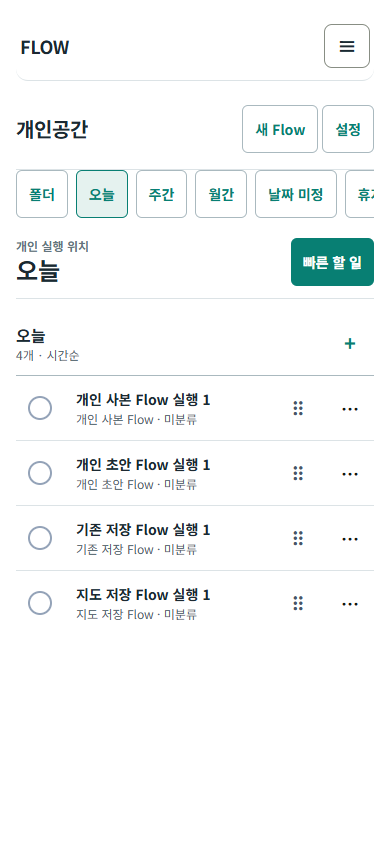
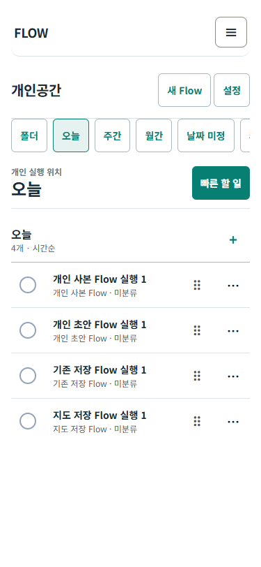
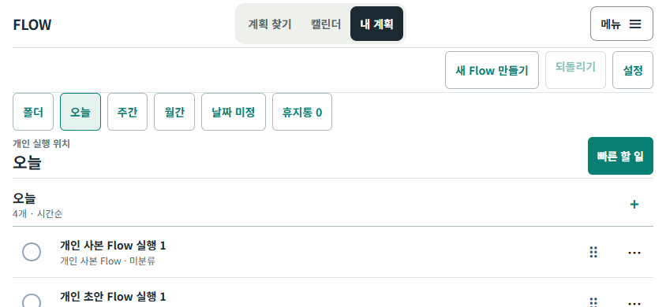
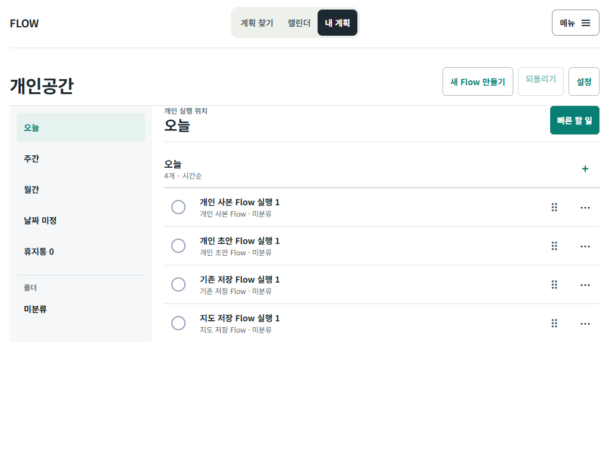
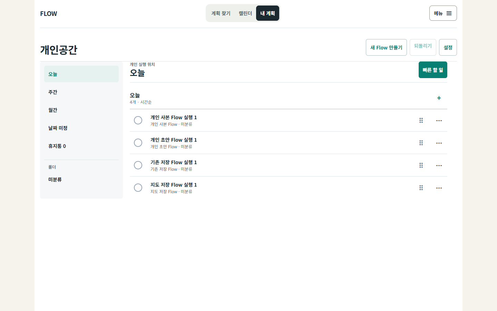
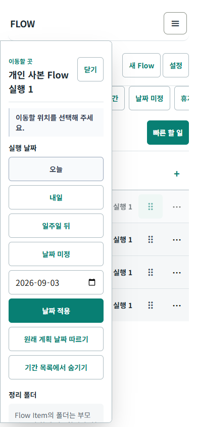
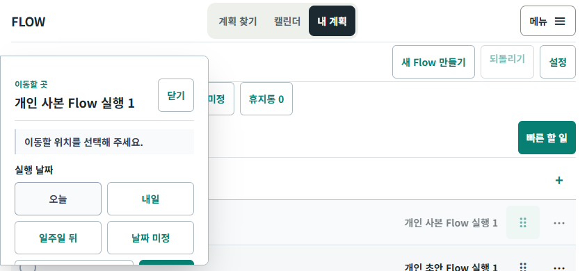
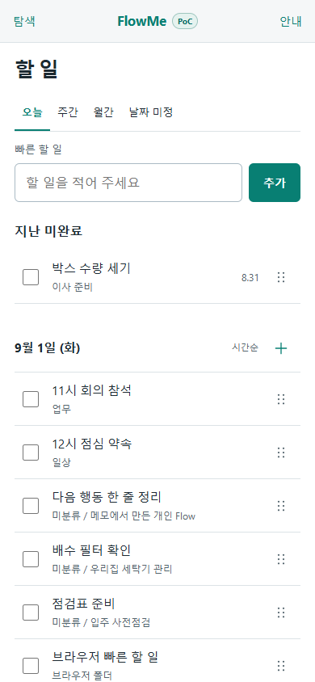
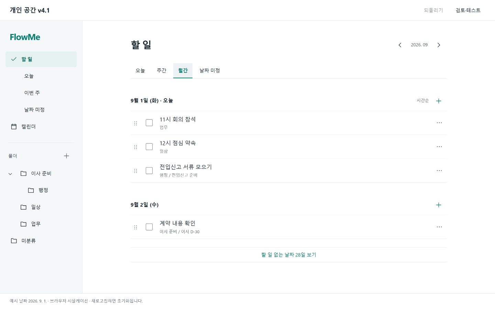

S1
네 origin이 한 번씩 보이고 상세가 열린다
미분류에서 Flow를 골라 제목·origin·Item 목록을 확인합니다.
실제 구현 화면, 필수 시나리오, 다섯 화면 크기의 자동 검사 결과를 한 문서에 모았습니다. 기능 검증과 제품 정책 승인은 분리해서 기록합니다.
화면 크기를 고른 뒤 iframe 안에서 기능을 직접 확인합니다.
flow:* 키를 임의로 추가하지 않습니다. 자동 시나리오의 네 origin 결과는 아래 캡처에서 확인할 수 있습니다.
서버 없는 독립 HTML은 파일을 바로 열어 네 origin과 모든 조작을 확인할 수 있습니다. 저장은 flow:poc:personal-workspace:v1:standalone-demo 한 키에만 남습니다.
서버가 꺼져 있으면 새 창 링크와 iframe이 열리지 않습니다. 해당 PoC worktree에서 npm.cmd run dev -- -p 3107을 실행하면 다시 열립니다.
자동화 통과 여부와 별개로 직접 이해하고 조작할 수 있는지 표시합니다.
미분류에서 Flow를 골라 제목·origin·Item 목록을 확인합니다.
날짜와 폴더를 바꿔도 마지막 한 번의 Undo로 원래 상태가 복구되는지 봅니다.
Flow의 폴더를 옮긴 뒤 Item 하나의 날짜만 바뀌고 Flow 소속은 유지되는지 봅니다.
오늘에서 완료한 뒤 Flow 상세와 기간 목록을 확인하고 다시 엽니다.
사용 방식이 달라도 동일한 이동 규칙과 안내가 적용되는지 봅니다.
Escape·pointer cancel·저장 실패도 원래 상태를 유지하는지 확인합니다.
마지막 성공 상태는 복원되고 손상 payload는 기존 /my로 닫히는지 확인합니다.
PoC 조작은 전용 prefix에만 기록되고 기존 flow:* 값은 byte 단위로 같아야 합니다.
모든 캡처는 production build를 브라우저로 연 결과입니다. 실제 기기 사진이나 관찰 사용자 검증은 아닙니다.








정적 UI 기준의 정보 구조는 유지하되, 실제 서비스 토큰과 접근 가능한 조작 상태를 적용했습니다.


FlowMe / FLOW, 할 일 / 개인공간 / 내 계획, 이번 주 / 주간 명칭이 섞여 있습니다./calendar parity는 이번 직접 범위의 오늘·주간·월간·날짜 미정에는 포함되지 않았습니다. 다음 통합 단계에서 포함 여부를 결정해야 합니다.PoC 통과를 제품 출시나 사용자 검증으로 확대 해석하지 않습니다.
| 검증 층 | 현재 상태 | 확인된 범위 |
|---|---|---|
| 구현 | 완료 | read model, PoC store, 폴더·기간·이동·완료·Undo·reload |
| 자동 테스트 | 1,522 / 1,522 | 순수 모델, identity, 저장 경계, transition, 기존 회귀 |
| 브라우저 시뮬레이션 | 4 / 4 | S1–S8, 독립 HTML, 다섯 화면 크기, 가로 넘침·콘솔·page error 0건 |
| 운영 데이터 불변 | 동일 | 시나리오 전후 허용 prefix 밖 모든 localStorage key/value byte 동일 |
| Android Chrome | 미실행 | 실제 기기 확인 필요 |
| iOS Safari | 미실행 | 실제 기기 확인 필요 |
| 관찰 사용자 | 0명 | 자동화·캡처는 관찰 사용자 증거가 아님 |
| commit / push / PR | 미진행 | 별도 승인 전 로컬 격리 worktree에만 유지 |
| Preview / Production | 미진행 | 운영 통합과 배포는 이번 PoC 범위 밖 |
입력 내용은 저장하지 않습니다. 복사해서 이 Codex 작업에 붙여 주세요.
작성일 2026-09-01 · 근거: 격리 worktree의 현재 구현과 자동 브라우저 검사 · 실제 기기 및 관찰 사용자 검증은 별도입니다.